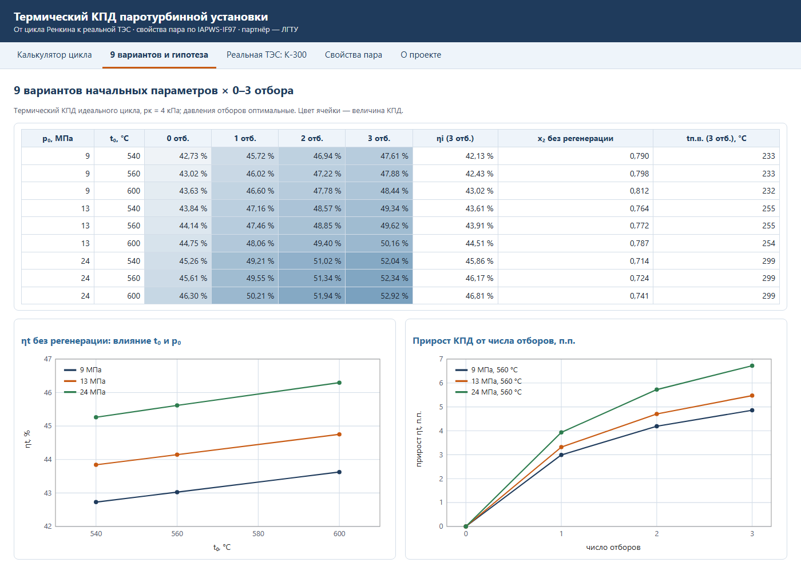
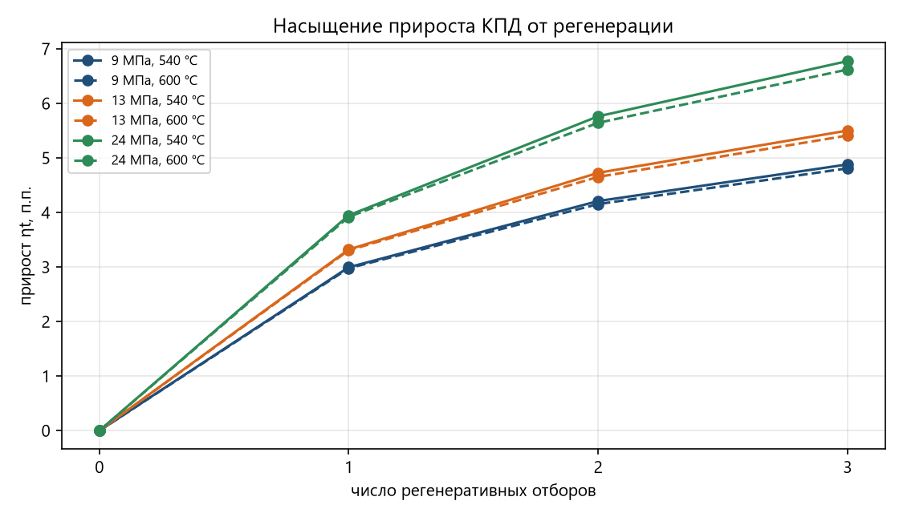
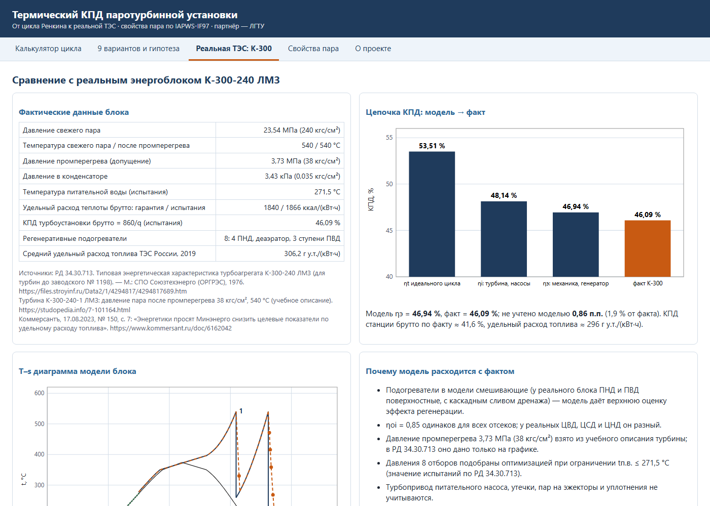
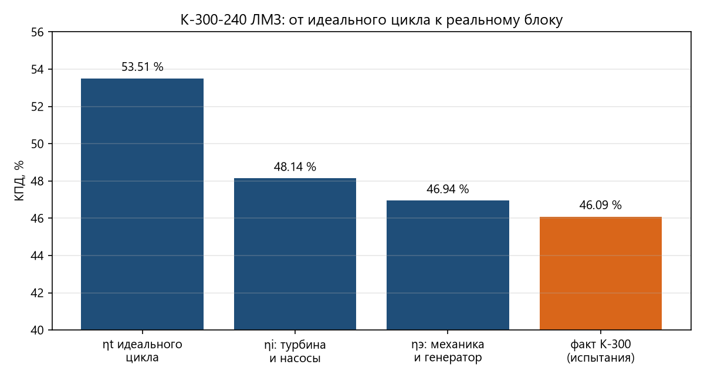
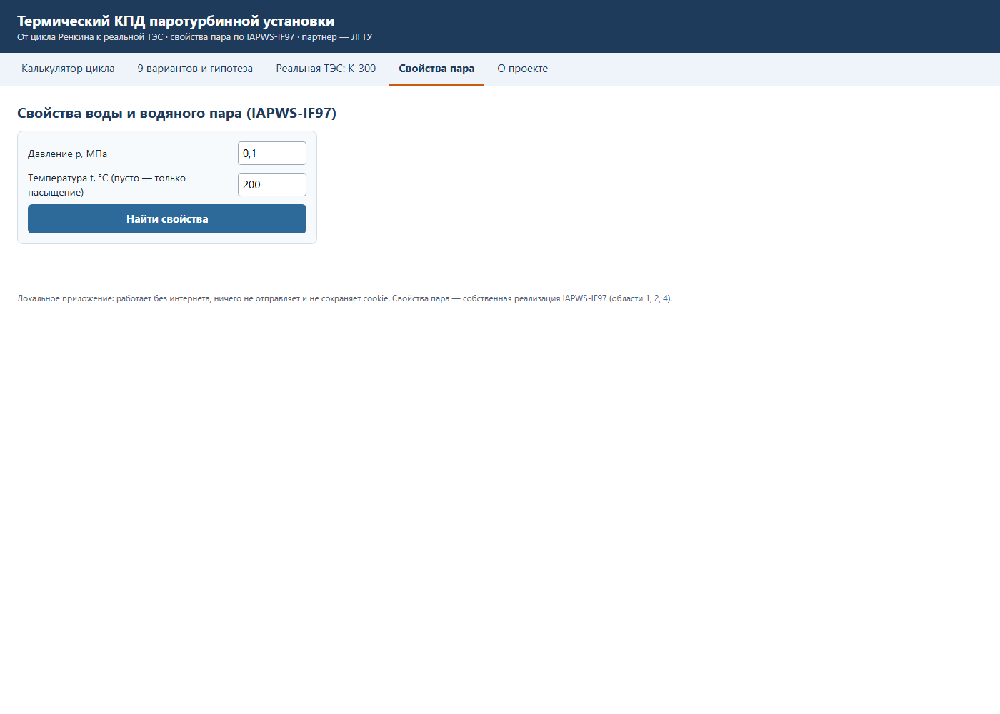

Что сделано
Расчётная модель цикла Ренкина с регенерацией: свойства пара по стандарту IAPWS-IF97, 9 вариантов начальных параметров (9/13/24 МПа × 540/560/600 °C), 0–3 регенеративных отбора с оптимальными давлениями, T–s диаграммы, тепловые схемы, Excel-книга с формулами и сравнение с реальным блоком К-300-240.
Демо (30 с)

Ключевые результаты, ηt, %
| p₀, t₀ | 0 отб. | 1 | 2 | 3 |
|---|---|---|---|---|
| 9 МПа, 540 °C | 42,73 | 45,72 | 46,94 | 47,61 |
| 13 МПа, 560 °C | 44,14 | 47,46 | 48,85 | 49,62 |
| 24 МПа, 540 °C | 45,26 | 49,21 | 51,02 | 52,04 |
Гипотеза «насыщения» регенерации подтверждена в 8 из 9 вариантов (исключение — 24 МПа / 540 °C: прирост 2→3 отбора 1,01 п. п.).
Скриншоты и графики







Как запустить интерактивную версию
Калькулятору нужен локальный Python-сервер, поэтому здесь — витрина.
Скачайте папку rankine-kpd, запустите Запустить.bat (или python app/server.py) — интерфейс откроется в браузере.